10
Selecting Data to Save and Plot
From the Outputs Setup tab of the Outputs pane, you can specify nets, terminals, and measurements you want to save and plot. You can save all node voltages and terminal currents or specify a set of voltages and currents you want to save. You can select output nodes and terminals on your schematic and build expressions using the
Each item that appears on the Outputs Setup tab has a Plot check box and a Save check box. You can select the check box for those outputs you want to plot or save, or deselect the check boxes of those items you do not want to plot or save.
See the following topics for more information:
- Opening the Outputs Setup Tab
- Selecting Output Signals on the Schematic
- Specifying Whether a Result Will Be Saved or Plotted
- Adding or Modifying an Output Expression
- Creating Dependent Expressions
- Creating Expressions to be Measured Across Dimensions
- Creating a Combinatorial Expression
- Using MATLAB® Expressions in Outputs
- Loading an OCEAN or a MATLAB Measurement
- Saving Operating Point Parameters
- Copying Outputs
- Adding User-Defined Columns in the Outputs Setup Tab
- Exporting Outputs to a CSV File
- Importing Outputs from a CSV File
- Configuring How Outputs Appear on the Outputs Setup Tab
- Filtering and Searching in Outputs Setup Pane
- Selecting Outputs to Save or Plot
- Removing Outputs
- Saving All Voltages or Currents
Opening the Outputs Setup Tab
You can use the Outputs Setup tab of the Outputs pane to add a new output signal/expression/OCEAN or MATLAB script or to change an existing output.
In a new test, the Outputs pane is not visible by default. To open the Outputs Setup tab, do the following:
-
On the Welcome to ADE Assembler pane, click the hypertext link below Outputs.
The Outputs pane appears displaying the Outputs Setup tab.
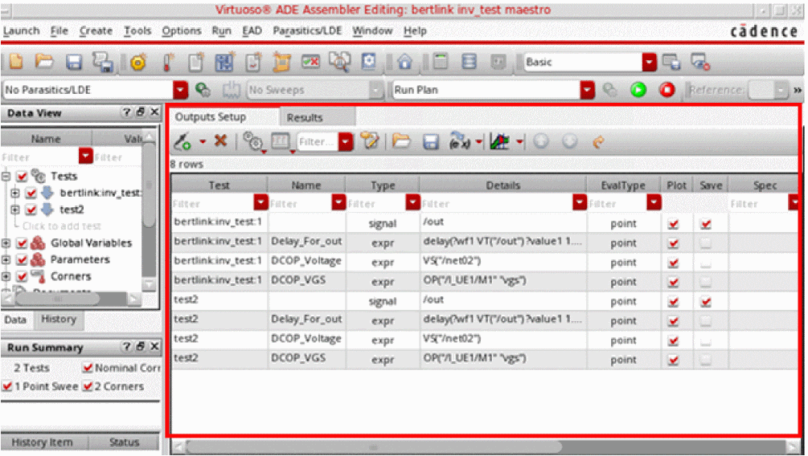On this tab, you can specify the outputs to be saved or plotted.

See the following topics for more information:
- Selecting Output Signals on the Schematic
- Adding or Modifying an Output Expression
- Specifying Whether a Result Will Be Saved or Plotted
- Using MATLAB® Expressions in Outputs
- Loading an OCEAN or a MATLAB Measurement
- Saving Operating Point Parameters
- Copying Outputs
- Adding User-Defined Columns in the Outputs Setup Tab
- Configuring How Outputs Appear on the Outputs Setup Tab
- Selecting Outputs to Save or Plot
- Removing Outputs
Selecting Output Signals on the Schematic
You can
To select an output on the schematic, do the following:
-
On the Outputs Setup tab, click
 .
. -
In the drop-down list, select a test and choose Signal.
A new row is added for the test with the output type signal. -
(Optional) In the Name field, type the name for the output.
This name appears in the Waveform window. -
Double-click the Details field and click the ellipsis button.
The schematic window appears in a tab. -
In the schematic, select a signal.
The signal name appears in the Details field on the Outputs Setup tab.By default, the current data is saved for all selected terminals. However, you can choose to save or plot voltage data, or both current and voltage. For more details, refer to Specifying the Type of Data for Signal Outputs. - (Optional) You can select or deselect either or both of the following check boxes:
See also the following topics for more information:
- Specifying the Type of Data for Signal Outputs
- Selecting Outputs to Save
- Selecting Outputs to Plot
- Selecting Nodes, Nets, and Terminals
- Selecting a Digital Bus or a Bundle of Buses
- Searching for Conditional Results
- Viewing and Editing Output Signals or Expressions in Calculator
Specifying the Type of Data for Signal Outputs
By default, ADE Assembler saves the current values for all selected terminals, but you can choose to save or plot voltage data, or both current and voltage.
To control the type of data to be saved for the selected terminals, do one of the following:
- Modify the Terminal Selection Type drop-down list on the ADE Assembler Plotting/Printing Options form.
-
Modify the terminalSelectionType environment variable, which is by default set to
"current".
Using the two ways specified above, you can choose to save either current, voltage, or both types of data for all selected terminals. If you need flexibility to choose the type of data to be saved while selecting a terminal, you can set these settings to "prompt". This setting displays the Choose Type message prompt for every terminal output selection. In this message prompt, you can select the type of data to be saved or plotted for the output.
Depending on your selection, ADE Assembler saves the desired type of data. The data type of a signal output is indicated by its name and output type. For signals with current type of data, ADE Assembler adds the _I suffix in the name and (I) in the output type. Similarly, it adds the _V suffix in the name and (V) in the output type for the outputs that save the voltage data.
If you choose to save both, ADE Assembler creates two outputs, one for current and the other for voltage.
The following example shows the signal outputs created for all of these choices.
Indicators are also added to the schematic view, as described below.
- For the signals saving the current data, the terminal is circled in the schematic view.
- For voltage data, the terminal is marked with a V.
- For signals saving both current and voltage, both types of indicators are used.
The following figure shows two examples.
The revised output names and types, and the visual indicators on schematic are helpful in identifying the purpose of signal outputs in maestro views as well as in plotted graphs.
Important Points to Note
-
Any change in the value of terminalSelectionType is reflected in the Terminal Selection Type drop-down list on the ADE Assembler Plotting/Printing Options form. However, if you update the value of the Terminal Selection Type drop-down list on the form, the corresponding
.cdsenvsetting is ignored in the current Virtuoso session. -
To keep consistency with the previous versions, by default, no output names are added for the terminals selected to save current data when terminalSelectionType is set to
"current". However, when this variable is set to"voltage", an output name is added with the_Vsuffix for outputs saving voltage data, as shown below.
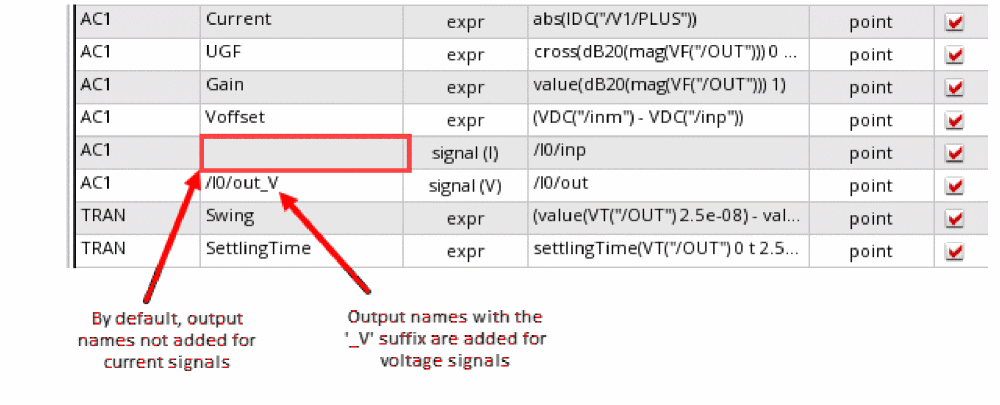You can set the alwaysNameTerminalOutputs environment variable totto always add the_Isuffix to the name of outputs saving current data, as shown below.
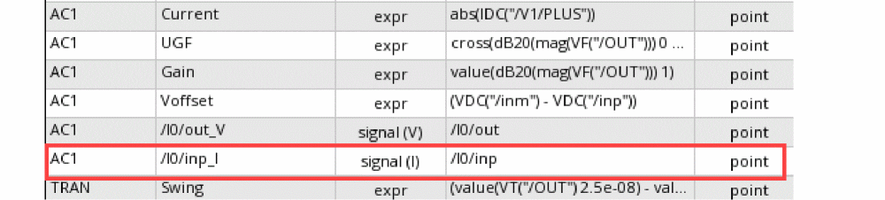 - Similar to other common variables, the value of terminalSelectionType is also shared by ADE Explorer and ADE Assembler.
- The output type and name of signal outputs are changed in the existing maestro views too.
-
To probe terminal voltage from an expression, set the
?typeargument of thevcalculator function to"terminalV", as shown below.
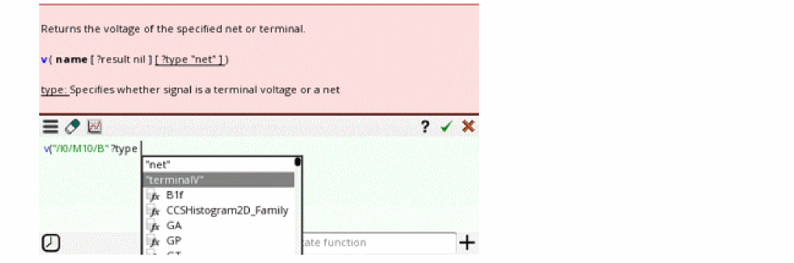
Selecting Outputs to Save
To select outputs to be saved, do the following:
-
On the Outputs Setup tab of the Outputs pane, right-click a test and choose To be saved.
The schematic window appears in a tab. -
On the schematic, select one or more nodes, nets, or terminals.You can set the terminalSelectionType environment variable to define the default type of data to be saved for each signal output selected on the schematic. When the variable is set to
"prompt", the Choose Type form is displayed for each selected terminal. For more details, refer to Specifying the Type of Data for Signal Outputs. -
Press the Esc key when you are done.
The name of each selected item appears (such as /out or /I2/PLUS) in different rows in the Outputs Setup tab. The Save check box is selected.
Selecting Outputs to Plot
To select outputs to be plotted, do the following:
-
On the Outputs Setup tab of the Outputs pane, right-click a test and choose To be plotted.
The schematic window appears in a tab. -
On the schematic, select one or more nodes, nets, or terminals.You can set the terminalSelectionType environment variable to define the default type of data to be saved for each signal output selected on the schematic. When the variable is set to
"prompt", the Choose Type form is displayed for each selected terminal. For more details, refer to Specifying the Type of Data for Signal Outputs. -
Press the Esc key when you are done.
The name of each selected item appears (such as /out or /I2/PLUS) in different rows in the Outputs Setup tab. The Plot check box is selected.
The program plots the selected items in a waveform window at the end of the simulation.
See also Searching for Conditional Results.
Selecting Nodes, Nets, and Terminals
A circle appears around each pin when you choose a terminal and wires appear highlighted when you choose a net. You can alternate between selecting a terminal and selecting the wire to which it is connected.
- Click an instance to choose all instance terminals.
- Click the square pin symbols to choose currents.
- Click wires to choose voltages.
- Click and drag to choose voltages by area.
- Select nodes and terminals on lower-level schematics by doing the following:
Selecting a Digital Bus or a Bundle of Buses
In the Outputs Setup pane, you can specify a digital bus output to be saved or plotted. The digital bus output can include a single bit or multiple bits bundled together in one output.
To add a single bit or a bundle of bits from a bus as outputs in the ADE Assembler Outputs Setup pane, perform the following steps:
-
Add a new output row of type
signal. Then double-click in the Details column and click the ellipses button.
Alternatively, right-click the output row and choose To Be Saved or To Be Plotted. The schematic of the design is opened in a new tab. -
In the schematic, click the bus.
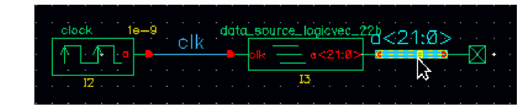The Select bits from bus form appears.
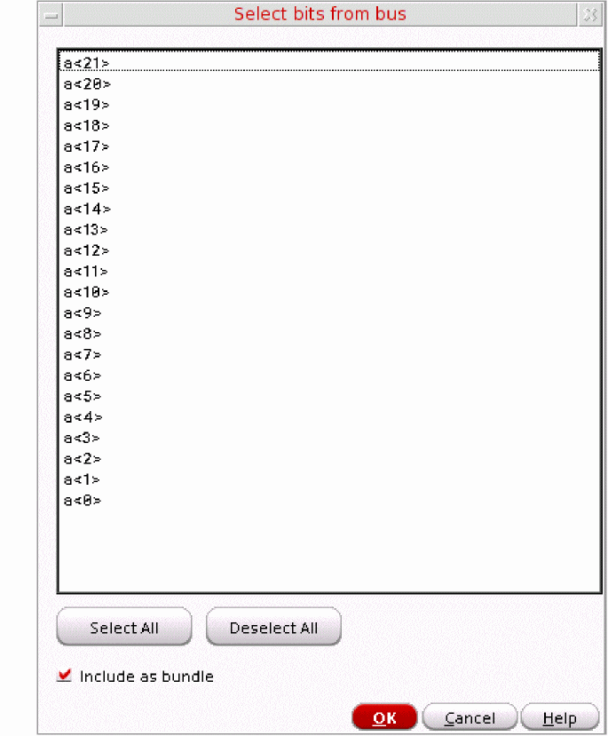Perform one of the following steps to specify bits from the bus as outputs to be saved or plotted:- To add a single bit as an output, select the bit and click OK.
-
To add multiple bits bundled together as an output,
-
Press the
Ctrlkey and select the bits. - Ensure that the Include as bundle check box is selected and click OK.
The selected bits appear in one row in the Outputs Setup pane. -
Press the
-
To add multiple bits to individual outputs, right-click the output row and choose To Be Saved or To Be Plotted. The schematic of the design is opened in a new tab.
In the schematic, click the bus to open the Select bits from bus form and perform the following steps:
Each selected bit appears in a different row in the Outputs Setup pane.
You can also click the Select All button to select all the available bits. Or use the Deselect All button to clear the selection.
The following image shows how the selected bits appear as outputs in the Outputs Setup pane in ADE Explorer.
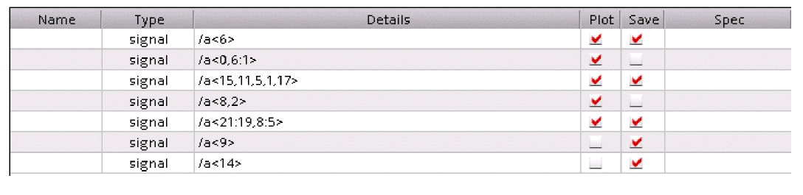 - In the Name field on the Outputs Setup pane, type the name for the signal output. This name appears in the graph window.
- You can click or clear the Plot or Save check box corresponding to the output as required.
-
If you have used the To Be Saved or To Be Plotted command to open the schematic, press the
Esckey to end the selection.
Specifying Whether a Result Will Be Saved or Plotted
You can specify whether an item will be saved to the results database or plotted in a waveform window on the Outputs Setup tab of the Outputs pane by selecting or clearing the Plot or Save check box for the item. Selecting the Plot check box causes the selected item or items to appear in a waveform window at the end of the simulation.
Following tests do not have any outputs selected for plotting:
<testname1>
<testname2>
...
Adding or Modifying an Output Expression
You can use the
To add an output expression, do the following:
-
On the Outputs Setup tab, click
.
-
In the drop-down list, select a test and choose Expression from the sub menu.
A new row is added for the test with the output type expr. -
(Optional) In the Name field, type a name for the expression.
This expression name appears in the Virtuoso Visualization and Analysis XL window. -
(Optional) The default value in the EvalType column is
point. This signifies that by default the expression will run for the given data point. If you want to run the expression for all corners across the design point, double-click in the EvalType cell and selectcornersfrom the pull-down list.
When you set the EvalType as corners, the color of the row is changed to blue. For more details, refer to Creating Expressions to be Measured Across Dimensions.
- Double-click the Details field.
- Type an output expression directly in the Details field or use the expression builder to build an output expression. To add the output expression using the expression builder, do the following:
-
Click Open expression builder (
).
The expression builder appears.
Build an output expression in the space given on the expression builder. For example, you can build an expression for the 3 dB point of an output signal as shown below.
-
Click
 on the expression builder to copy the expression to the Details field of the output.
on the expression builder to copy the expression to the Details field of the output.
The expression appears in the Details field. If the expression uses a signal or net that does not already exist in the outputs table, a new row for an output of typeImplicitis added to the table. For more details, see Viewing Implicit Signals in Outputs.
For more information about how the integer and floating point division is performed using SKILL, see Integer vs. Floating-Point Division in the Arithmetic and Logical Expressions chapter of the Cadence SKILL Language User Guide.
- (Optional) Change the Plot and Save options for the expression, if required. See also Specifying Whether a Result Will Be Saved or Plotted.
- (Optional) In the Spec and Weight columns next to the expression, define the specification and the weighting factor for the specification for the output expression. For more information, see Defining a Specification.
-
(Optional) In the Units column next to the expression, specify the unit value to be used for displaying the measured results for the expression in the Results tab of the Outputs pane.
For example, if you specify the unit value asdBfor an expression namedGain, the measured results for the expression is displayed with the unit valuedBin the Results tab of the Outputs pane. -
(Optional) In the Digits column next to the expression, specify the number of significant digits in which the measured results for the expression needs to be displayed in the Results tab of the Outputs pane. Valid values are
2to15.If you do not specify the number of significant digits, the default number of significant digits specified in the Default Formatting Options form will be used to display the measured results for the expression in the Results tab. For more information, see Specifying the Default Formatting Options. -
(Optional) Double-click in the Notation column next to the expression. From the drop-down list that appears, choose the notation style in which the measured results for the expression needs to be displayed in the Results tab of the Outputs pane.
Choose To Display results using the default notation style specified in the Default Formatting Options form. For more information, see Specifying the Default Formatting Options.
Display results in the suffix notation.
If you choose suffix, double-click in the Suffix column next to the expression and choose the suffix from the drop-down list. If you specify the suffix as auto or do not specify the suffix in the Suffix column, the suffix is automatically assigned.
If you do not specify the notation style, the default notation style specified in the Default Formatting Options form will be used to display the measured results for the expression in the Results tab. For more information, see Specifying the Default Formatting Options.
Viewing Implicit Signals in Outputs
When you use signals in an expression and those signals are not already added in the outputs table, ADE Assembler automatically creates new outputs of type Implicit to save those signals.
As shown in the example below, when you create average("/net06")) as an output expression, an implicit output is created for signal /net06.
Please note the following points for implicit signals:
-
By default, implicit outputs are not shown in the outputs table. To show these outputs, select Implicit Signals from the Configure what is shown in the table command menu in the toolbar of Outputs Setup tab.
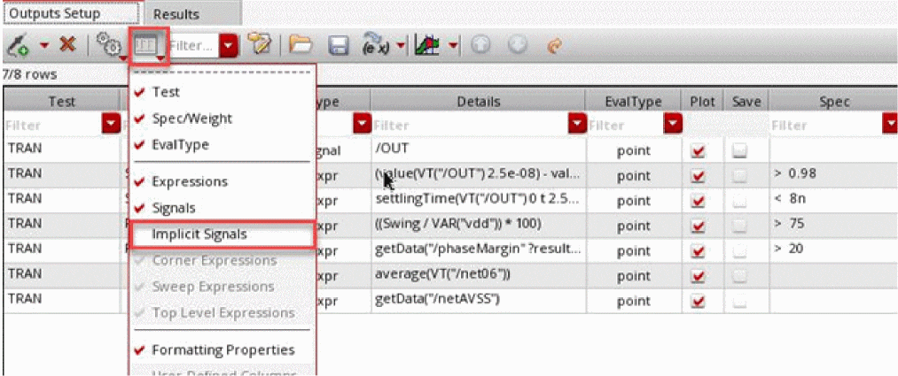 - By default, implicit outputs are not saved or plotted. To save an implicit output in the results database, select the Save check box in the Save column.
-
In the following two scenarios, the implicit signals are not saved in the netlist:
- The outputs setup for a maestro cellview already contains expressions for which implicit signals are not created
- The Select signals to output (save) option on the Save Options form (which is opened by using the Save All... command in the context-sensitive menu of an output) is set to Selected during the creation on an output expression, and later you change the setting to all.
In these cases, you can set the saveImplicitSignalsDuringRun environment variable tot. This ensures that the implicit signals are added to thesavestatement in the netlist during the simulation run. However, those implicit signals will not be visible in the Outputs Setup or Results tab.
- Creating Dependent Expressions
- Creating a Combinatorial Expression
- Creating Expressions to be Measured Across Dimensions
- Viewing and Editing Output Signals or Expressions in Calculator
- Re-evaluating Expressions and Specifications
- Using MATLAB® Expressions in Outputs
- Loading an OCEAN or a MATLAB Measurement
- Searching for Conditional Results
- Working with Specifications
- Specifying the Default Formatting Options
Creating Dependent Expressions
You can create expressions based on other expressions. For example, assume that you have an expression named s1 with the expression 5. If you want another expression, say, s2 to be ten times the value of s1, type s1*10 in the Details field as shown in the figure below.
Note the following when you create dependent expressions:
-
Expressions can be added in any order, irrespective of their dependencies. For example, if the expression
s2is based on expressions1, it is not necessary to add the expressions1before adding the expressions2. - An expression can be based on any number of other expressions.
-
Ensure that there is no cyclic dependency between the dependent expressions.
In the following example, a cyclic dependency exists because expressionmyExprdepends on expressionmyExpr1, and expressionmyExpr1also depends on expressionmyExpr.myExpr=myExpr1*5
myExpr1=myExpr+10
-
If the expression name that is being used in a dependent expression has special characters such as spaces or dot (.), use the \ character to escape these special character. For example, if you are using an expression named
my exprin another expression, escape the space character inmy expras shown in the figure below:
 Expression names can have special characters as they are valid string values. However, when these expression names are used in dependent expressions, they are treated as SKILL symbols and should be in a valid SKILL format. Therefore, special characters in such expression names should be escaped using the \ character.
Expression names can have special characters as they are valid string values. However, when these expression names are used in dependent expressions, they are treated as SKILL symbols and should be in a valid SKILL format. Therefore, special characters in such expression names should be escaped using the \ character. -
It is not necessary to plot or save the expressions on which other expressions are based. For example, if the expression
s2is based on expressions1, it is not necessary to select the Plot or Save check box for the expressions1in the Outputs Setup tab. -
You cannot assign a name to an output of type signal and then use that name in a dependent expression. For example, you cannot assign the name
myVout2for theVout2signal as shown below, and then usemyVout2in a dependent expression.
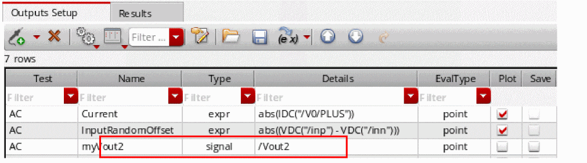If you want a dependent expression to be based on a signal, create an expression based on that signal and use the name of that expression in a dependent expression. For example, create an expression namedmyVout2Exprbased on the signalVout2as shown below, and then usemyVout2Exprin a dependent expression.
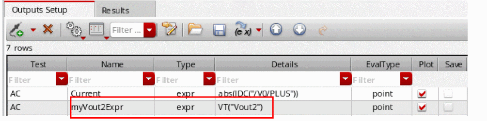 - Error messages, if any, regarding dependent expressions are displayed in the Command Interpreter Window (CIW).
-
Dependent expressions will appear on the Results tab only if the Plot check box is checked. However, if you want to display of the results of intermediate expressions irrespective of the setting of the Plot check box, set the forceShowAutomaticExpressions environment variable to
t.
Plotting Dependent Expressions
When sweep includes dependent design variables, scalar expressions outputs are plotted as continuous line.
For example, consider the ADE Explorer setup in which you have the following design variables:
Here, the variable vdd1 is dependent on another variable vdd.
Now, if you run simulation and plot the /OUT signal, the following waveforms are generated for the three values of vdd, as shown in the figure below.
Creating a Combinatorial Expression
A combinatorial expression is one created using more than one output from one or more tests. For example, you might want to create an expression such as
Test1_Output1/Test2_Output2
To use values from another test, it is required to use the calcVal function.
To create a combinatorial expression such as the one above, do the following:
-
On the Outputs Setup tab, click
.
-
In the drop-down list, select a test and choose Expression.
A new row is added for the test with the output type expr. -
(Optional) In the Name field, type the name for the expression (such as
Out1DivOut2).
This name appears in the Waveform window. - Double-click the Details field.
-
Click Open expression builder (
 ).
).
The expression builder appears, as shown below.
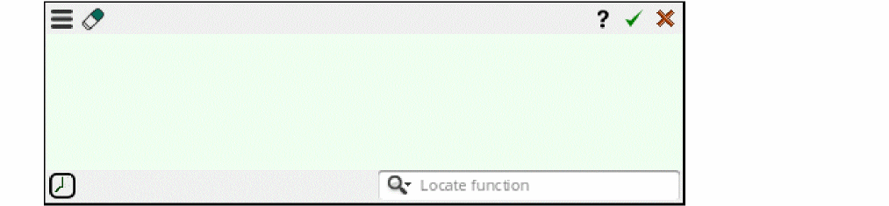 -
Type
calcValin the given editing area. -
Select the name of output from the given argument list that appears in the editor.
Select the name of the test from the given list, as shown below.
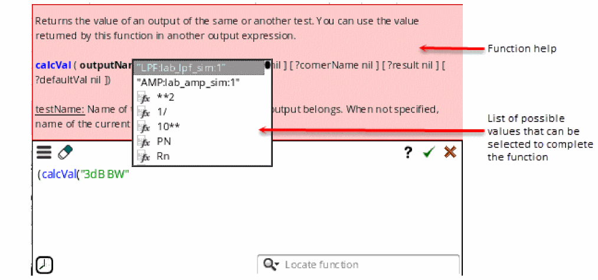 -
Type the
/operator. -
Type
calcValand select the second output value to be used in the expression. - Click on the expression builder to add the expression to the Details field of the output.
The calcval expression using results from two tests in the setup has been created.
Creating Expressions to be Measured Across Dimensions
Simulation results data is spread across multiple dimensions—sweeps or corners. Therefore, at times, it is required to measure outputs across these dimensions. You can do this by specifying the dimension across which you want to evaluate a result.
ADE Assembler provides the following ways to evaluate expressions across different dimensions:
Measuring Outputs Across Corners
By measuring an output across corners, you evaluate an expression once for every sweep point across all the corners. It results in a single output value that is displayed in the column for the Nominal corner.
To evaluate expressions across corners, perform the following steps:
-
Right-click in the Outputs Setup tab and choose Add Expression.
A new blank output row with output typeexpris added to the outputs table. - In the new row, double-click in the Test column and select a test name.
-
Double-click in the EvalType column and specify the evaluation type as
corners.
The color of the row changes to blue.
point. - (Optional) Add a name for the expression in the Name column.
- Enter an expression in the Details column.
When the evaluation type is set as corners, the tool automatically adds an additional argument, overall and sets it to t.
You can calculate measurements across corners only for the following functions:
An example is shown in the following figure.
When the argument overall is set to t and the evalype is corners, it performs the calculation on the results of corner simulations for each design point that are treated as discrete values for evaluation and not waveforms.
For more details on how the measures are calculated across corners, refer to Calculations of Measurements Across Corners.
There are some more ways in which you can create expressions to be measured across corners. For more details, refer to Alternate Ways to Create Measurements Across Corners.
When you run simulations, results of the expressions measured across corners are displayed on the Results tab, as shown in the following figure.
Note the following on the Results tab:
- Rows that display results of the expressions measured across corners appear in blue.
- Results of the expressions measured across corners are displayed in the Nominal column and the columns for other corners are blank. No new column is created to show this result.
- If you disable the nominal corner before running simulation, the results are still displayed in the Nominal column. Only the cells that display results for expressions measured across corners show results. Other cells in the column do not have any results.
- If you specify performance specifications for the expressions measured across corners, depending on the measured value, the tool displays the pass/fail status.
- If you troubleshoot a design point, ADE Assembler ignores the outputs that are measured across corners.
- If you open the debug environment, the outputs that are measured across corners are not shown in the Outputs section of the debug environment.
- Re-evaluation is not supported for the outputs that are measured across corners.
- For Monte Carlo simulations, if you clear the Save Data to Allow Family Plots check box and if you have outputs to be measured across corners as independent expression then it will not be evaluated and show eval error. This is because the evaluation is based on simulation results that are not saved. However, if an expression to be measured across corners is fully dependent on other expressions for which results are saved in the results database, it is evaluated and results are shown.
Other important points to note:
-
When you plot the results using Auto Plot, the results of measurements across corners are plotted across all design points, as shown in the following figure.
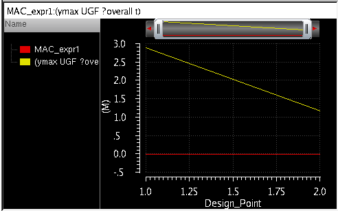 - The results of measurements across corners are displayed in all views on the Results tab.
- For Monte Carlo results, in the yield view, only a single row is displayed for the expressions measured across corners. However, for other expressions, result for each corner is displayed in a separate row.
-
When you plot the results using Auto Plot, the results of measurements across corners are plotted across all design points, as shown in the following figure.
Alternate Ways to Create Measurements Across Corners
Alternate ways in which you can create expressions to be evaluated across corners are:
-
By creating OCEAN measures in a .ocn file and loading that file. For example:
MAC_ocn1= ymax(bandwidth(dB20(mag(VF("/OUT"))) 10 "low") ?overall t)
axlOutputResult(MAC_ocn1 "MAC_ocn1")
While creating an OCEAN measure in one file, you can also use an expression defined in another OCEAN file. For example, ocean1.ocn is defined as given below.
BW=bandwidth(VF("/net1") 10 "low")
axlOutputResult(BW "BW")
In ocean2.ocn, you can create another measure that uses BW that was defined in ocean1.ocn. This is shown in the example given below.
MAC_ocn1=ymax(calcVal("BW" "testLib:top:1") ?overall t)
axlOutputResult(MAC_ocn1 "MAC_ocn1")
-
By using the ocnxlOutputExpr OCEAN function in an OCEAN script to create an output. This function supports the
evalTypeargument that specifies how to evaluate the expression.
Calculations of Measurements Across Corners
When the evalType column is set to corners, the measurements are calculated across corners. This section describes how different scalar and waveform expressions are calculated to measure the outputs across corners.
Measurements of Scalar Expressions
When the evalType column is set to corners, by default the overall argument is set to t. With this default value of overall, the measurement is calculated by using the result values obtained for each corner, irrespective of the number of sweep variables. This gives a scalar value as result.
In the example shown below, average of risetime is calculated by adding the risetime calculated for all the sweep variables and then dividing the sum by the count of values.
rt_avg = average of risetime scalar values calculated for each corner
See the results of rt_avg in the figure given below.
If you change the default value of the overall argument and set it to nil, this returns a scalar value in case of a single sweep variable, but a waveform output in case of multiple sweep variables.
In the example given above, for rt_max_nil, ymax is calculated across vdd at each temperature value and a waveform is plotted for each temperature. The result is shown in the figure given below.
Measurements of Waveform Expressions
For the default value of the overall argument, a measurement is first calculated on the waveform for each corner thereby resulting into a set of values. The measurement is further applied on this resulting set, thereby giving a scalar value as a result.
Consider the example shown below.
In this example, for wave_avg_t, first average of VT("/OUT") is calculated for each corner individually and then discrete average of the resulting values is taken, as shown below.
average = average values obtained for corners
Similarly, for wave_pp_t, first, ymax and ymin are calculated for VT("/OUT") for each corner. Next, ymax and ymin of the resulting values is calculated.
ymax_all = ymax of the ymax values of individual waveforms
ymin_all = ymin of the ymin values of individual waveforms
Next, peakToPeak is calculated using the resulting ymax_all and ymin_all values, thereby giving a scalar result.
peakToPeak = ymax_all - ymin_all
However, if you set the overall argument to nil, a measurement is calculated on the waveform for each corner and the resulting values are plotted. This is not the expected result for measurements across corners. In the example shown above, for wave_avg_t1, average is calculated for each combination of VDD and temperature and the resulting values are plotted, as shown in the figure shown below.
Measurements Across Corners for Functions that Run on a Single Corner Variable
Some of the calculator functions that do not support the new argument, overall, give correct results when calculated across corners. For example, functions such as xmin, xmax, deriv, cross, and value, that work on a single dimension, give correct results when calculated across corners, as shown below.
The results for these outputs are shown below.
However, it is not recommended to measure outputs across corners for other functions that work on multiple dimensions and do not support the overall argument.
Measuring Outputs Across Sweeps or Across All
By measuring an output across sweeps, you evaluate an expression once across all the sweep points for each corner.
Similarly, by measuring an output across all the sweep points and corners, you evaluate an expression once across all the results for the available sweep points and corners. These measurements provide a single resulting value.
The results for both the types of measurements are displayed in a separate table displayed at the top of the Detail results view.
To evaluate expressions across sweeps or anything, perform the following steps:
-
Right-click in the Outputs Setup tab and choose Add Expression.
A new blank output row with output typeexpris added to the outputs table. - In the new row, double-click in the Test column and select a test name.
-
For a measurement to be evaluated across sweeps, double-click in the EvalType column and specify the evaluation type as
sweeps.
For a measurement to be evaluated across all, specify the evaluation type as all.
The color of the row changes to blue.
- (Optional) Add a name for the expression in the Name column.
- Enter an expression in the Details column.
You would notice that if you use any of the following functions, ADE Assembler automatically adds an additional argument, overall and sets it to t:
When you run simulations, results for the outputs measured across sweeps are displayed in a separate table on top of the detailed results.
The following example shows how the results are displayed:

Important Points to Note
-
Outputs measured across sweeps can be dependent only on other outputs of type
pointorsweeps. They cannot be dependent on the outputs of typecornersorall. -
Similarly, outputs measured across all can be dependent only on other outputs of type
pointorall. - Re-evaluation of results is supported for the outputs measured across sweeps or across all.
-
Results for measurements across different dimensions are displayed in the Detail - Transpose results view as shown below.
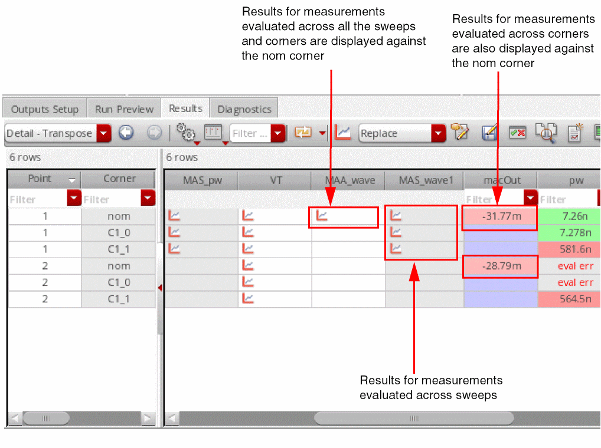 -
You can toggle the Configure what is shown in the table – Post Run Results command on the Results toolbar to show or hide the results of outputs of type
sweepsorall.
Viewing and Editing Output Signals or Expressions in Calculator
You can send the outputs from the
Depending on your requirement, you can either send a single output (signal or expression), a set of outputs, or all the outputs to the Calculator.
To send a single or a selected set of outputs to the Calculator, do the following:
-
On the Outputs Setup tab, press the
Ctrlkey and click the expressions or signals that you want to copy to the Calculator. -
Right-click any one of the selected output and choose Send to Expression Editor.
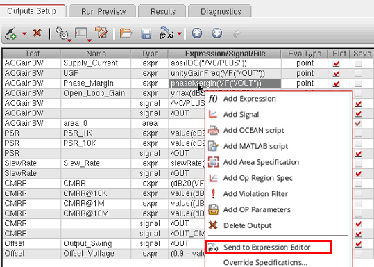The selected outputs are copied to the Expression Editor in Virtuoso Visualization and Analysis XL Calculator window, as shown below.
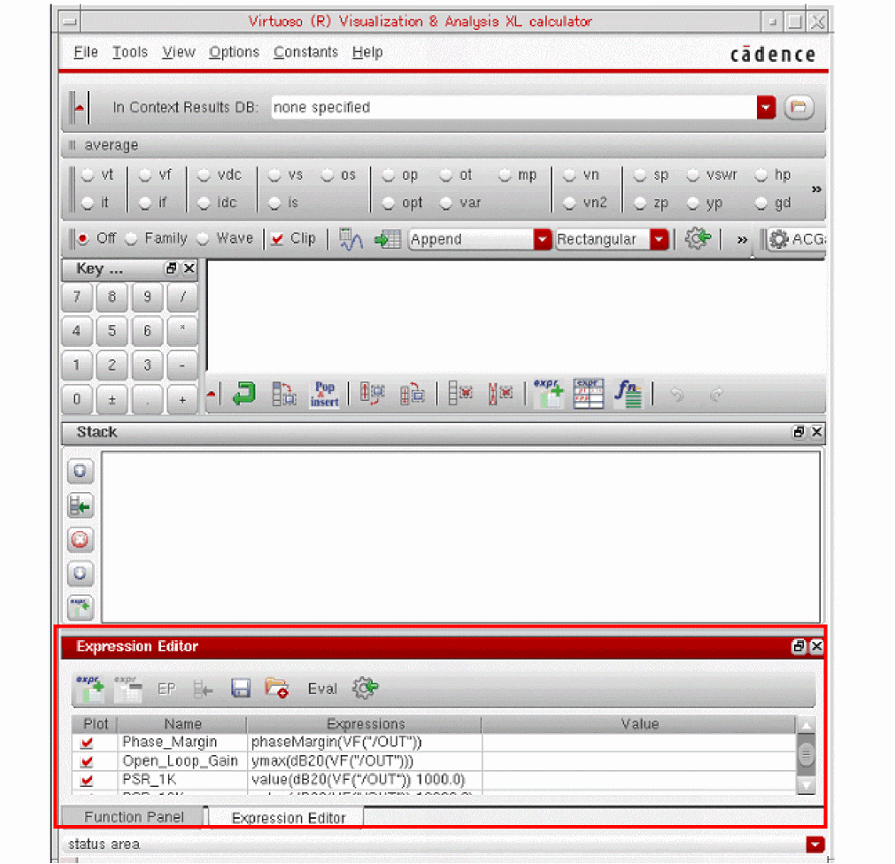If the Expression Editor is not visible, you might need to expand the Calculator window.
The names of expressions are the same as those mentioned in ADE Assembler. If no name is given for the source output in ADE Assembler, a default nameE<count>is used, as shown in the following figure.
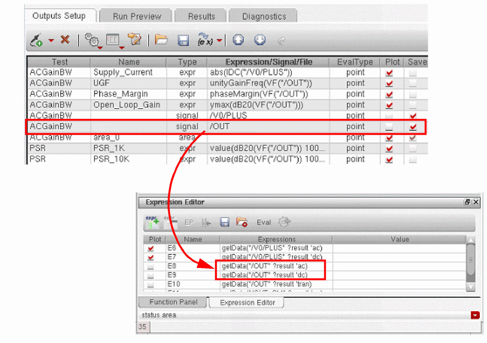In the above figure, the signals have been copied from the ADE Assembler Outputs Setup tab to the Expression Editor. These signals have been assigned default names and they have been converted into expressions.
If more than one analysis is enabled for the ADE Assembler test, a separate expression is created to get the signal data from each analysis. In the example shown above, the testACGainBWcontains two tests,acanddc. When the signal/OUTis sent to the Expression Editor, two separate expressions are created to get the result data for/OUTfrom the two analysis. The?resultargument indicates the name of the analysis from which the data is taken.
To send all the output expressions or signals from the ADE Assembler Outputs Setup tab to the Expression Editor in Calculator, do the following:
-
Click the drop-down arrow to the right of the Send to Expression Editor command to view the command options.
By default, Expressions is selected, which implies that only the expressions will be copied to the Calculator.
-
To copy all the expressions and signals, select All.
-
Click Send Outputs to Expression Editor.
All the expressions and signals, are copied to the Expression Editor in Calculator.
Using MATLAB® Expressions in Outputs
Fast, accurate, and efficient analysis of simulation results is one of the key requirements for circuit simulation and verification. Integration of MATLAB® with ADE Assembler provides the capability to apply various data slicing and querying methods for advanced data analysis and waveform processing using a high-level language.
To use MATLAB in ADE Assembler, you can add MATLAB expressions as outputs that are evaluated in the MATLAB engine. The MATLAB engine runs independent of ADE Assembler, but there is a channel through which ADE Assembler exposes the circuit simulation data. This provides MATLAB a capability to access both the scalar and waveform data that can be used in measurements for single points, sweeps or corners as well as for Monte Carlo analysis. The results of these expressions are returned by MATLAB and displayed on the Results tab in ADE Assembler.
The following topics describe how you can use MATLAB expressions in ADE Assembler:
- Adding Outputs of Type MATLAB Expression in ADE Assembler
- Using an Interactive MATLAB Session Opened from ADE Assembler
- Evaluating MATLAB Expressions Across All Dimensions
- Evaluating MATLAB Expressions for a Data Point
- Examples of MATLAB Expressions
- Debugging MATLAB Expressions in the MATLAB Window
Adding Outputs of Type MATLAB Expression in ADE Assembler
To add a MATLAB expression in ADE Assembler, perform the following steps:
-
On the Outputs Setup tab, click , and then the test for which you need to add the expression.
-
Choose MATLAB Expression from the drop-down list.
A new row withmatlabexpras Type is added to the outputs table. - Double-click the Details column for this row to enable editing.
- Enter a MATLAB expression or a function already defined in MATLAB. This function can be a built-in function in the MATLAB engine or the additional functions provided by Virtuoso for integration of MATLAB with ADE. If you need to perform a custom calculation, you can also define a function in the MATLAB window and use that in the MATLAB expression.
Alternatively, click Open MATLAB (…) in the Details column to open the MATLAB window. Create a MATLAB expression, copy it to the clipboard, and paste it in the new row added in step 2.
all, which indicates that the MATLAB expression is to be evaluated after the simulation results for all the points are ready. These expressions can be measured for a single point or across all data points or corners. If an expression needs to be evaluated using the simulation results of a single design point, change the EvalType to point.Related Environment Variables:
Example: If you have defined a function in MATLAB, as shown below,
function result=myFunction()
result=100
end
you can call this function from the matlabexpr type of output in ADE Assembler, as shown below.
Using an Interactive MATLAB Session Opened from ADE Assembler
Instead of passing on MATLAB expressions to the MATLAB engine for evaluation during simulation run, you can open the MATLAB application from the ADE Explorer or ADE Assembler environment, and define a function or expression in that to query the already available simulation data.
For this, perform the following steps:
-
Click Open MATLAB (
) on the toolbar of the Results tab.
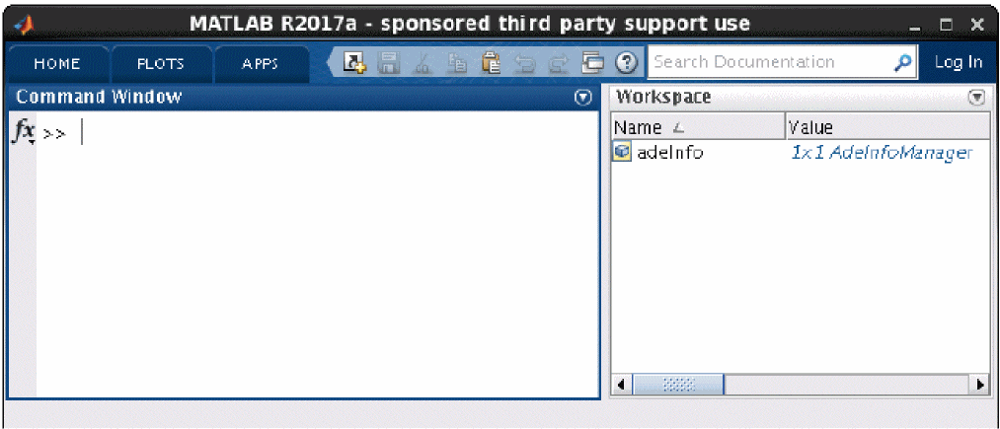Note the following: -
Use the properties and functions of the
adeInfoobject to access the history results.
For example, you can define a function to use the simulation results as shown below.function result=myMeasurement() adeInfo.loadResult; rdb = adeInfo.adeRDB; rdb.corners; ... ... end
By default, the result context for theloadResultfunction in the MATLAB window is set to the current ADE simulation history. You can change the context to another history by setting the history argument of theloadResultfunction.adeInfo.loadResult('history', 'Interactive.2')
-
Save the function in a file. By default, the file is saved in the MATLAB working directory, which is the same as the current working directory for Virtuoso. The MATLAB files are saved with the
.mextension.
A MATLAB function can return the following types of values to ADE Assembler:- Scalar values: A single value is returned. When a MATLAB expression that returns a single value is added as an output expression, a single value is returned for each point and displayed on the Results tab of ADE Assembler.
-
Waveform objects: When a MATLAB expression that returns a single waveform is added as an output expression in ADE Assembler, a waveform icon is displayed for each point on the Results tab.
If you run a MATLAB function from the MATLAB window, you can use thecdsPlotfunction, which is included in thecadence.utilspackage, to plot a waveform result, as shown below.import cadence.utils.cdsPlot %Load results of simulation data point #1 adeInfo.loadResult('test','tran','DataPoint', 1); wave = VT('/I0/I2/a'); cdsPlot(wave)
If the returned value contains multiple waveforms, you can refer to the individual waveform by using the dot (.) operator.cdsPlot(waves.wave(1)) cdsPlot(waves.wave(2))
- String Values: These are helpful in returning string values from a MATLAB expression.
-
MATLAB structs: These are helpful in returning multiple results from a single MATLAB function call. You need to use the dot (.) operator to access individual values from the struct.
In case of errors, the MATLAB expressions return
Error.
A sample MATLAB function that returns multiple values is given below.function result = multresults1() res1 = 1; res2 = 200; result = struct('result1', res1, 'result2', res2); end
To refer to individual values in the struct returned by this object, you need separate expressions on the Outputs table of ADE Assembler, as shown below.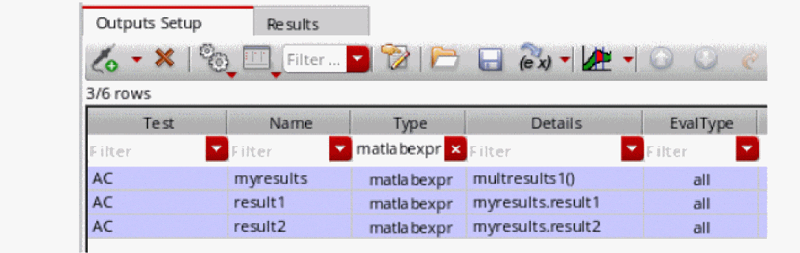To get a hint about the individual members of a struct, move the mouse over a struct type of result. A tooltip displays the details of the struct, as shown below.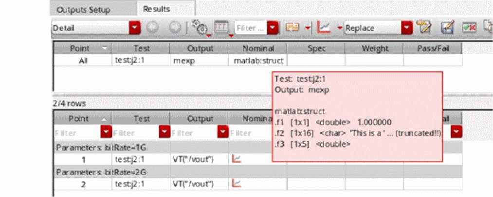
Evaluating MATLAB Expressions Across All Dimensions
By default, the MATLAB expressions have EvalType set to all. Therefore, these expressions are evaluated across all dimensions, and their results are displayed in a separate section at the top of the Results tab, as shown below.

Evaluating MATLAB Expressions for a Data Point
Similar to other output types, if a MATLAB expression is to be evaluated for a data point, set the EvalType value for that expression to point, as shown in the example given below.
While running a simulation, ADE sends this expression to the MATLAB engine and also shares the reference of the current test and data point for the expression. In addition, it sets the context for the session and history in MATLAB to the current session and history in ADE Assembler.
If MATLAB returns a scalar value, the value is displayed on the Results tab. If MATLAB returns a waveform, a wave icon is displayed. Click that icon to view the result, as shown below.
point as an eval type for MATLAB expressions.Related Environment Variables
Examples of MATLAB Expressions
A MATLAB expression can be used to perform different types of calculations on the input data. A few examples are:
- To use the scalar result of an output in another output using dependent expressions
- To return the results of multiple corners or sweep points in the current history
- To return selective values from the results by using query constraints
- To use the results from other tests in the same history
- To use the results of another simulation saved in a different history
To create these MATLAB expressions, you can use the built-in functions in the MATLAB engine or the additional functions provided by Virtuoso for integration of MATLAB with ADE. The additional functions are provided in a package named cadence, which contains various sub-packages. You can also define custom functions using the available functions.
The following table shows a summary of the packages included in the cadence package.
|
Contains constraints that you can use to filter results based on certain criteria |
Contains special functions to query or group simulation results saved in RDB |
The following examples show how you can create MATLAB expressions for the different types of calculations:
Example 1: MATLAB Expression that Uses a Waveform from the Current Simulation
To access the waveform of a signal, say /OUT, from the current simulation results, use the VF function.
VF('/OUT')
; returns a waveform for each data point
For a waveform value returned by a MATLAB expression or function, a waveform icon is displayed on the ADE Results tab. Similar to the other waveform results, you can double-click that icon to view the plot. However, if you are running the command in the MATLAB window, you can use the cdsPlot function of the cadence.utils.cdsPlot library to display the graphs.
Now, to get the maximum Y-axis value for waveform /OUT, you need to use VF('/OUT') inside ymax function.
ymax(VF('/OUT'))
; returns a scalar for each waveform returned for each data point
In the example given above, VF returns a waveform of the ac sweep net voltage. This waveform is an input for ymax, which returns a scalar value—the maximum value on the Y-axis of a waveform.
ymax(VF('/OUT')) expression is equivalent to max(VF('/OUT').y), where VF('/OUT') returns an object of cadence.Waveform and VF('/OUT').y returns the Y-axis data of VF('/OUT') in the form of a column vector in MATLAB. max, which is a native MATLAB function, returns the maximum value from that column vector.
VF is defined in the cadence.srrdata package and ymax is defined in cadence.calculator. Both the packages are imported by ADE while sending a request to MATLAB for expression evaluation.
In addition, ADE internally shares with MATLAB the details of the current ADE session. It also calls the cadence.AdeInfoManager.loadResult function to load the simulation results for the current test and the current data point by internally running the following commands:
import cadence.srrdata.*
import cadence.utils.cdsPlot
%Load results of simulation data point #1
adeInfo.loadResult('test','<name-of-current-test>','DataPoint', 1);
Therefore, by default, an expression is evaluated for the current point.
For more details about loadResult, run the adeMatlabHelp command in the MATLAB window to open the help describing the integration of MATLAB with ADE, and read the Loading Simulation Results section.
Example 2: MATLAB Expression that Uses a Scalar Value from Another Output in the Current Simulation
If you need to access a scalar value of another output from the current simulation result, you can create a dependent MATLAB expression in the same way as for other types of expressions.
In the example shown below, ymaxVtoAllm10 is dependent on the result of a pre-defined MATLAB function ymaxVtoAll.
In dependent expressions, ADE automatically analyzes the dependency between MATLAB expressions, and evaluates those according to their dependency order.
Example 3: A MATLAB Expression to Group the Results of Sweep Points
You can use the functions provided in the cadence.utils package to work on the results of sweep points.
For example, you run a simulation by sweeping the values of parameter M3.fw. To find ymax of output /OUT for certain specific sweep points, you can create a MATLAB expression as shown below.
cadence.utils.measureWaveGroupBySweeps( @ymax, @VT, '/OUT', 'M3.fw', 'test', 'TRAN')
The above example returns a waveform that plots the ymax value of /OUT for each value of M3.fw.
Example 4: To return selective values from the results by using query constraints
For the case explained in example 3, if you need to consider only selected data points that meet the following criteria:- temperature is 0equals to
- M3.l 350e-09 is not equal to
- M3.fw4.25e-06
To run the measureWaveGroupBySweeps function on a selected set of values from the simulation results, you can specify query constraints, as shown below.
cadence.utils.measureWaveGroupBySweeps( @ymax, @VT, '/OUT', 'test', 'TRAN' ...
'constraints', cadence.Query.Parameter('temperature') == 0 &
cadence.Query.Parameter('M3.l') == 350e-09 & ...
cadence.Query.Parameter('M3.fw') ~= 4.25e-06)
The measureWaveGroupBySweeps function is run for all the data points. Therefore, MATLAB executes the function only after the entire simulation run is complete. When ADE calls the cadence.AdeInfoManager.loadResult function, it sets the context to the current ADE session and the current test. The context for data point is set to -1, which implies that the calculation is to be done across all.
The example returns a waveform that plots the ymax value of /OUT for each value of M3.fw where the given criteria is met.
Additional reference materials:
-
For more details about a query constraint, run the following command in the MATLAB window:
doc cadence.Query -
For more details about
measureWaveGroupBySweeps, run the following command in the MATLAB window:doc cadence.utils -
To know about the internal implementation details of
measureWaveGroupBySweeps, run theadeMatlabHelpcommand to open the help document on MATLAB integration and read the example on grouping waveform results for sweep variables.
Example 5: A MATLAB Expression to Perform Calculations on the Grouped Results of Corners
If you need to group the scalar results for corners and then perform some mathematical calculations on the grouped data, you can use the cadence.utils.measureGroupByCorners function.
For example, you need to find the maximum value for an output, SettlingTime, across all the data points in each corner group. For this, you can use the measureGroupByCorners function, as shown below.
cadence.utils.measureGroupByCorners(@max, 'constraints', cadence.Query.Output() == 'SettlingTime');
In measureGroupbyCorners function runs on scalar values saved in the results database. Similar to measureWaveFormsBySweeps, for this function too, ADE sets the context to the current ADE session and the current test.
The example returns a waveform that plots the max value of SettlingTime for each corner, as shown below.
Additional reference materials:
-
For more details about query constraint, run the
doc Querycommand in the MATLAB window. -
For more details about
measureGroupByCorners, run thedoc utilscommand in the MATLAB window. -
To know about the steps performed by
measureGroupByCorners, run theadeMatlabHelpcommand to open the help document on MATLAB integration and read the example on grouping results for corners.
Debugging MATLAB Expressions in the MATLAB Window
If the simulation results for a MATLAB expression do not return the required result or show errors, you can edit those and re-evaluate without running the simulation again. Expressions can be edited in the Outputs Setup pane or in the MATLAB window.
To edit and debug an expression in the MATLAB window:
-
When debugging a result in the Detail results view, right-click the result value and choose Open MATLAB.
In this case, ADE sets the context to the current session, history, test, and data point. You can access the other output values for that point, and verify the result while editing the expression. -
When debugging a result in the Detail-Transpose results view, click Open MATLAB on the toolbar of the Results tab.
In this case, ADE sets the context to the current session and history. The test is set to""and the data point is set to-1.
Loading an OCEAN or a MATLAB Measurement
To load an
-
On the Outputs Setup tab, click the
button.
-
In the drop-down list, select a test and choose OCEAN script or MATLAB script.
A new row is added for the test with the output type ocean or matlab. - (Optional) In the Name field, type a name to represent the measure.
- Double-click the Details field.
-
Type the name of (and location/path to) the script file.Alternatively, you can click the browse button to open a browser window so that you can browse to locate a file. After you select a file and click Open, the relative path to the file appears in the Details field.Once the script file name appears in this field, you can edit it by clicking the Edit File button .
- Editing an OCEAN or a MATLAB Script File
- Writing a MATLAB Script
- Specifying Whether a Result Will Be Saved or Plotted
- Searching for Conditional Results
Editing an OCEAN or a MATLAB Script File
To edit an OCEAN or a
- On the Outputs Setup tab, double-click the OCEAN or MATLAB script file you want to edit in the Details field.
-
Click clicking the Edit File
button.
The script file appears in a text editor. -
Edit the script file and save your changes.
The program uses the new script the next time you run the test.
Writing a MATLAB Script
When writing a MATLAB measure, you create a script in a .m file. You can use additional tools such as the cds_srr function provided in the Spectre/RF MATLAB Toolbox1 to read the results data. You can also use the axlCurrentResultsPath special function in your MATLAB script file to determine the current ADE Assembler results path. If you want your script to write results to the axlResult variable. You can plot your results in MATLAB if you include a MATLAB plot command in your script file.
To write a MATLAB measure for a test, do the following:
-
Use a text editor to create a
.mfile. -
(Optional) Use the
cds_srrfunction to access results data as follows:cds_srr( ’
wherepath_to_psf_dir’, ’analysisName’, ’outputVariable’ )
For example:cds_srr( ’simulation/ampTest/schematic/psf’, ’tran-tran’, ’out’ )
-
If you want your script to write results to the Results tab of the Outputs pane, you must assign the value to the
axlResultvariable as follows:axlResult =
For example:resultStatementaxlResult = max( out.time )
-
Save your changes and load this
.mfile.
Example scripts
The following script creates a MATLAB plot using the specified X and Y values.
figure
x = [1 2 3]
y = [2 0 6]
plot(x,y)
The following script accesses the value of the out output variable from the current transient results directory using axlCurrentResultsPath, plots out using MATLAB (Voltage on the X axis and time on the Y axis), and writes the measured value (for total simulation time) to the
out = cds_srr( axlCurrentResultsPath,'tran-tran', 'out' )
fig = figure
plot( out.V,out.time )
axlResult = max( out.time )
Saving Operating Point Parameters
In the Outputs Setup pane, you can specify the instances and their operating point parameters that you want the simulator to save. Currently, this feature is available only in the Spectre and operating point parameters for only DC and transient analyses are saved.
By default, the instance column on the Outputs setup pane is blank. To add instances and their operating point parameters that are to be saved, perform one of the following steps:
-
On the Outputs Setup tab, click
.
-
In the drop-down list, select a test and choose Op Parameters from the sub menu.
A new row is added for the test with the output type oppoint. -
In the new row, click Select operating point instances, as shown below.
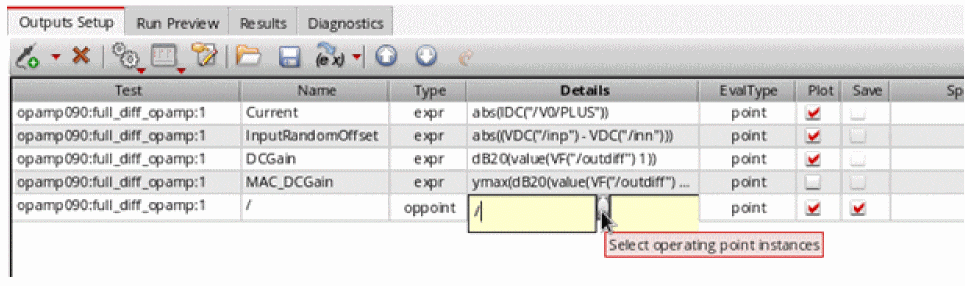The Schematic Editor window appears. -
Select the required instances in this window. The selected instances are highlighted in the Schematic Editor window, as shown in the figure below.
The selected instances are listed in the table as shown in the figure below.
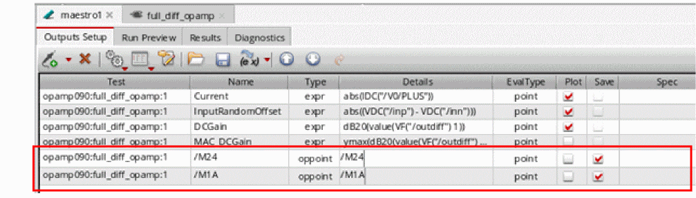
Adding Operating Point Parameters
In the Details column, do one of the following to specify the operating point parameters to be saved for each instance:
- Double-click in the Details column for each instance and type the name of the operating point parameters that are to be saved. The specified parameters must exist for that instance.
-
Click the ellipses (...) button adjacent to the cell in Details column, as shown in the figure below.
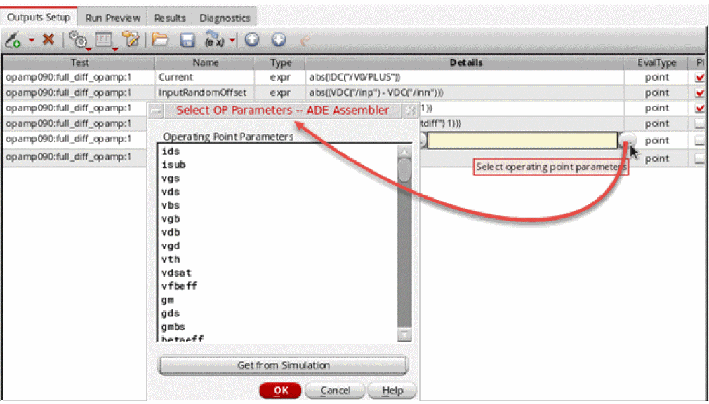The Select OP Parameters form appears. Choose the operating point parameters from the Select OP Parameters form. If the instance is not selected or invalid, the Save OP Parameters form will not open and a warning message is displayed in CIW.If you do not find the operating point parameters listed in the form, click the Get from Simulation button to run the simulation. If the simulation run is successful, the operating point parameters are listed in the form; otherwise, an error message is displayed in CIW.
Next, in the Select OP Parameters form, select the operating point parameters that you want to save by using theCtrlkey and click OK. The selected operating point parameters are added to the table.
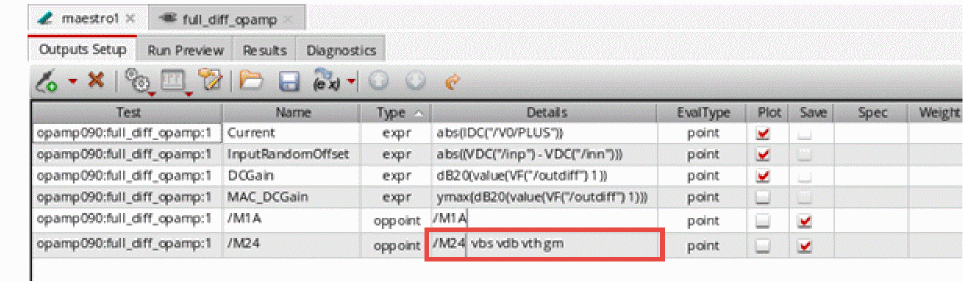Consider a scenario in which you have added two instances,If you next add some more instances from schematic to the table and open the Select Operating Points form for one of them, the operating point parameters for these instances will not be listed in the form and you will need to click the Get from Simulation button again to retrieve operating point parameters for the newly added instances./I0/Q3and/10/Q2, to the table from the schematic. You open the Select OP Parameters form for/I0/Q3and do not find anything listed in this form. In such a scenario, you need to click the Get from Simulation button to retrieve operating point parameters from the simulation run. If you now open the Select OP Parameters form for instance/I0/Q2, you will find that the operating point parameters for this instance are already listed in the form and you do not need to click the Get from Simulation button again.
The operating point parameters that have already been added in the Operating Parameters field are always selected in the Select OP Parameters form if present.
Run the simulation. To ensure that the operating point parameters were saved, open theinput.scsfile (the link to this file is provided in the netlist). For example, in the figure below, you can see that theib,gm, andrpioperating point parameters were saved for instanceM3,iboperating point parameter was saved for instanceQ2in theinput.scsfile.
You can click the Plot button to plot the operating point parameters for instancesQ2andM3. The selected parameters for these instances are plotted in append mode.
You can also add and delete operating points by using the saveOpPoint and deleteOpPoint OCEAN commands.
Copying Outputs
You can copy outputs within a test or from one test to another. You can also copy and paste the contents of an output. This allows you to quickly setup outputs for your tests.
For more information, see the following topics:
Copying Outputs Within and Across Tests
You can copy outputs within a test or from one test to another. For example, if you have specified an output expression for one test, you can do the following:
- Make a copy of the output expression within the same test.
-
Copy the output expression to another test.
To copy outputs within and across tests, do the following:
-
On the Outputs Setup tab of the Outputs pane, right-click the row for the output you want to copy, select Copy To Test, then do one of the following:
- To copy the output within a test, select the name of the same test.
- To copy the output to another test, select the name of that test.
- To copy the output to all tests, select All.
To copy multiple outputs, hold down the Shift key (for contiguous selection) or the Ctrl key (for noncontiguous selection) and click the output to add it to the selection set. Right-click and choose Copy To Test, then select the name of the target test or All.
DCGain from one test to another, and the target test has an output with the same name, the output expression will not be copied. Copying the Contents of an Output
To copy the contents (name, expression, file name, specification, weight, units or digits) of an output, do the following:
-
On the row for the output in the Outputs Setup tab of the Outputs pane, select the content you want to copy.
For example, to copy an expression, select the expression in the Details column. - Press Ctrl+C to copy the content.
-
Select the cell where you want to paste the content.
For example, to paste an expression, select a cell in the Details column. - Press Ctrl+V to paste the content.
Adding User-Defined Columns in the Outputs Setup Tab
In addition to the default set of columns that appear in the Outputs Setup tab, you can add one or more user-defined or custom columns. These user-defined columns can be used to save additional information, such as comments, target values for specifications, or other notes related to a measurement.
To help you use the information provided in the user-defined columns while analyzing results, ADE Assembler makes this information available in the following ways:
-
User-defined columns are displayed on the Results tab. These columns are visible in the
Detail,Optimization,Summary, andYieldresult views. - If you add a new column and re-evaluate results, the new column is displayed on the Results tab.
- When you export the outputs to CSV or HTML files, the user-defined columns are also saved with other columns.
- These columns are displayed in the Specification summary sheets and datasheets.
For more information, see the following topics:
- Adding a User-Defined Column
- Renaming a User-Defined Column
- Deleting a User-Defined Column
-
Hiding a User-Defined ColumnTo know more about the SKILL APIs required to add a new user-defined column or to get or set value in a SKILL script, refer to SKILL Functions for Outputs in the ADE XL SKILL Reference Guide.
Adding a User-Defined Column
To add a user-defined column in the Outputs Setup tab, do the following:
-
Right-click the title of any existing column and choose Add Column from the context-sensitive menu that appears.
The Add Column form is displayed.
- In the New Column Name field, specify a name for the new column to be added.
-
Click OK.
A new column is added to the right of the existing columns.
You can add any information in a custom column. The information in this column is retained and displayed on the Results tab post simulation run.
Renaming a User-Defined Column
If required, you can rename a user-defined column. For this, do the following:
-
Right-click the column on the Outputs Setup tab and choose Rename Column from the context-sensitive menu.
The Rename Column form is displayed.
- In the Rename Column to field, specify a new name for the column.
- Click OK.
Deleting a User-Defined Column
To delete a user-defined column, do the following:
The column is removed from the Outputs Setup tab.
Hiding a User-Defined Column
To hide a user-defined column on the Outputs Setup tab, do the following:
To hide a user-defined column on the Results tab, do the following:
All the custom columns are hidden.
Exporting Outputs to a CSV File
You can save the outputs from the Outputs tab to a CSV file. This helps in saving outputs in a format from which they can be later reused and imported in another maestro view.
To export outputs to a CSV file, do the following:
- Ensure that all the required outputs are defined on the Outputs Setup tab.
- Click Export Outputs to CSV File on the toolbar on the Outputs Setup tab.
The Export Outputs to CSV form is displayed, as shown below.
- (Optional) Change the file name in the File field. By default, ADE Assembler uses the name of the maestro view as the name of the CSV file.
- (Optional) Click Browse to choose a directory where you want to save the CSV file. By default, the file is saved in the current working directory.
- (Optional) Select the Omit Test Column check box to specify that the test names are not to be saved in the CSV file.
By default, ADE Assembler saves the test name along with each saved output to indicate the test to which this belongs. Next time, when you import the outputs from the CVS file, the outputs will be assigned to the given test name only.
When the outputs are saved without the test name, you can load them later for another test as well. For more details, refer to Importing Outputs from a CSV File.
All the outputs defined on the Outputs tab are saved in the specified CSV file, as shown below.
Important Points to Note:
- In the saved CSV file, the Test column has been saved to indicate the test for which an output is saved. If you omit to save the test column, this information is not saved in the CSV file.
-
An appropriate output type, such as,
net,terminal,expr, orcornersis used to indicate the output type.cornersis the output type used for the expressions measured across corners. -
If no value is specified for any column, it is considered as
null. - It is mandatory to specify at least the Name column or the Signal and Expression columns in the CSV file.
- If you override an output specification for a corner, the overridden spec is also saved with the exported output. When you import such an output, the overridden spec value is applied to the same corner, if it exists in the ADE Assembler setup.
- Outputs that include the following are ignored while exporting outputs to CSV:
- By default, only the Test, Name, Type, Output, Plot, Save, and Spec columns are saved. However, if you have specified values in other columns as well, all other columns, such as Notation, are also saved in the CSV file.
-
Outputs that were earlier exported from the ADE L environment in a
.txtfile can be imported in ADE Assembler.
Importing Outputs from a CSV File
If you have outputs exported and saved in a CSV file, you can import those to the same or a different maestro view, as required.
To import the outputs from a CSV file, do the following:
- Open the maestro view to which you need to import the outputs.
-
Click Import Outputs from CSV File on the toolbar on the Outputs Setup tab.
The Import Outputs from CSV form is displayed, as shown below.
-
Click Browse and select the CSV file from which you need to import the output details.
ADE Assembler reads the specified file. If the details in the file were saved with the test column, the Test drop-down list on this form remains disabled.
If the selected CSV file does not contain the details of the test column, the Test drop-down list is enabled and the names of all the tests in the current maestro view are listed in it. -
(Optional) If the Test drop-down list is enabled, select the name of the test for which you wish to import the outputs from the specified CSV file.
SelectImport to All Teststo import the complete set of outputs for all the tests in the current maestro view. -
Select an appropriate option from the Operation field to specify how you want to use the output rows that already exist before you import details from the CSV file.
Following are the three possible operations to choose from:-
retain: If an output already exists in the Outputs Setup tab with a name which is same as that of an output being imported, the import is not done and the existing output is retained.
In this case, a message similar to the one shown below is displayed in CIW:*Info* Output "Supply_Current" exists in the current setup and the operation is "retain". Skipping import of row 2 from CSV file "./out2.csv".
An existing output which has the same signal name as that of an output being imported is also retained. -
merge: If an existing output for a given test has the same name as that of an output being imported, it is deleted and is overwritten by the imported output.
In this case, a message similar to the one shown below is displayed in CIW:*Info* Output "CMRR@10M" exists in the current setup and the operation is "merge". Deleting this output from the current setup and importing it from CSV file "./out1.csv".
-
overwrite: All existing outputs for the given test are deleted and all the imported outputs are used.
In this case, a message similar to the one shown below is displayed in CIW:*Info* The import outputs from CSV file operation is "overwrite". The original outputs in test "Offset" are deleted.
-
- Click Apply and then OK to import the outputs and to close the form.
Configuring How Outputs Appear on the Outputs Setup Tab
By default, the
For more information about viewing outputs in the Outputs Setup tab, see the following topics:
- Changing the Order of Outputs
- Sorting the Outputs
- Hiding and Showing Outputs
- Hiding and Showing Output Details
- Changing the Order of Columns
- Hiding and Showing Columns
- Filtering and Searching in Outputs Setup Pane
Changing the Order of Outputs
To change the order of outputs, do one of the following:
When you run a simulation, the outputs for a test are displayed in the same order in the Results tab of the Outputs pane.
Sorting the Outputs
By default, outputs are sorted by test names. However, you can sort them by any column on this tab. For example, you can sort the outputs by output name or by output type.
To change the sorting order by a column, click the header of that column. The up or down arrow on the top-right area of the column header shows if the rows are being arranged in the ascending or the descending order. All the output rows are sorted according the values in the selected column.
Hiding and Showing Outputs
You can use the drop-down menu of the command on the Outputs Setup tab to specify the outputs to be displayed on this tab. The drop-down menu provides the following commands:
- Show All Tests: Shows the outputs for all the tests defined in the Data View pane.
- Hide All Tests: Hides all the outputs.
- Show Enabled Tests: Shows the outputs for all the tests enabled in the Data View pane.
- Show Disabled Tests: Shows the outputs for all the tests disabled in the Data View pane.
-
<test-name>: Shows the outputs for the test named <test-name>.By default, ADE Assembler displays outputs for all the tests. You can specify the default hide or show criteria for outputs by using the testsShownInOutputsSetup environment variable. After you change the default display criteria in an maestro view, the value specified for this variable is ignored for that view.
Hiding and Showing Output Details
To show or hide output details in the Outputs table, do the following:
-
Click the Configure what is shown in the table (
 ) button on the Outputs Setup tab. The following drop-down list appears.
) button on the Outputs Setup tab. The following drop-down list appears.
- Select/deselect the check box next to an item in this list to show or hide the related information in the Outputs table.
Changing the Order of Columns
To change the order of columns in the Outputs Setup tab of the Outputs pane, do the following:
Hiding and Showing Columns
To hide the columns in the Outputs Setup tab of the Outputs pane, do the following:
Right-click a column name to display a context-sensitive menu listing all the columns. A check mark next to a column name indicates that the column is being displayed.
- To hide a column, click the column name.
- To unhide the column, right-click a column name and click the column once again in the context-sensitive menu.
Filtering and Searching in Outputs Setup Pane
You can use the search filters (Filters) displayed at the top of the Outputs Setup pane to filter the outputs based on specified search words or strings. These filters are displayed for all the fields in the Outputs Setup pane except for the Plot and Save check boxes.
0. However, you can hide these by setting this variable to the minimum number of rows for which you want to start showing the filters.Regardless of the setting of this variable, you can also show or hide filters manually for any number of output rows. To do this, right-click anywhere on the outputs header and choose Show Filters or Hide Filters.
To filter the output rows in the Outputs Setup pane, do one of the following
- Type search words or strings in the Filter drop-down.
- Select the previously searched words or strings that are saved in the Filter drop-down. For more information, see Viewing Search History.
- Select the saved named filter from the Named filters toolbar. For more information, see Using Named Filters Toolbar.
To specify filter conditions while searching or filtering the outputs,
-
Right-click in the Filter drop-down list and select the required conditions. The following figure displays the conditions that are selected by default.
The tooltip on the Filter drop-down list displays the selected search conditions, as shown in the figure below.
Viewing Search History
A history of the searched words or strings is also maintained in the Filter drop-down list. This history can be reused later, and therefore, helps in making the filtering or searching faster for the frequently used outputs. In addition, you do not need to type the search text again to search for particular outputs.
To clear the search history, select Clear Search History from the drop-down list of search filter.
In addition, after the searched outputs are filtered and listed, the filter drop-down list changes into a Cancel button that you can use to cancel the search and display all the specified outputs.
Using Named Filters Toolbar
You can use the Named filters toolbar to create and save named filters for combination of column searches that you use or refer to more frequently. These named filter include search words or strings used to filter the outputs for all columns.
To open the Named filters toolbar,
- Right-click anywhere on the menu bar and choose Toolbars – Named filters.
- Right-click anywhere on the toolbar area and choose Named filters.
-
Type a name in the drop-down list and click the Save named filter button.
The specified name is added as a named filter and displayed in the drop-down list.
-
In the drop-down list, select a named filter that you want to delete and click the Delete named filter button.
The selected named filter is deleted.
Selecting Outputs to Save or Plot
You can select outputs (signals and expressions) to save or plot by selecting the Plot or Save check boxes on the
To select an output for plotting, do the following:
-
In the Plot column, select the Plot check box.
The program plots the item when the simulation finishes.
To select an output for saving, do the following:
See also “Specifying Whether a Result Will Be Saved or Plotted”.
Removing Outputs
You can remove outputs (signals and expressions) from the save or plot set by deselecting the Plot or Save check boxes on the
To remove an output from the plot set, do the following:
-
In the Plot column, deselect the Plot check box.
The program does not plot the item when the simulation finishes.
To remove an output from the save set, do the following:
-
In the Save column, deselect the Save check box.
The program does not save the item to the results database.
To remove an output from the test setup, do the following:
-
In the Outputs Setup tab, select an output, right-click and choose Delete Output.
The program removes the item from the test setup.
See also “Specifying Whether a Result Will Be Saved or Plotted”.
Saving All Voltages or Currents
To save all of the node voltages and terminal currents, do the following:
-
On the Outputs Setup tab of the Outputs pane, right-click a test and choose Save All.
The Save Options or Keep Options form appears, depending on your target simulator. The options that appear on this form vary according to your target simulator: - Select the values you want to save and click OK.
Save Options form for Spectre Simulations
For Spectre simulations, the following Save Options form appears:
For more information about the fields on this form, see
Keep Options form for UltraSim Simulations
For UltraSim Simulations, the following form appears:
For more information on using the UltraSim simulator, refer to
Save Options form for AMS Simulations
For AMS Simulations, the following form appears:
For more information about the fields on this form, see
Save Options form for HspiceD Simulations
For HspiceD Simulations, the following form appears:
For details on working with the HSPICE simulator, refer to
Return to top